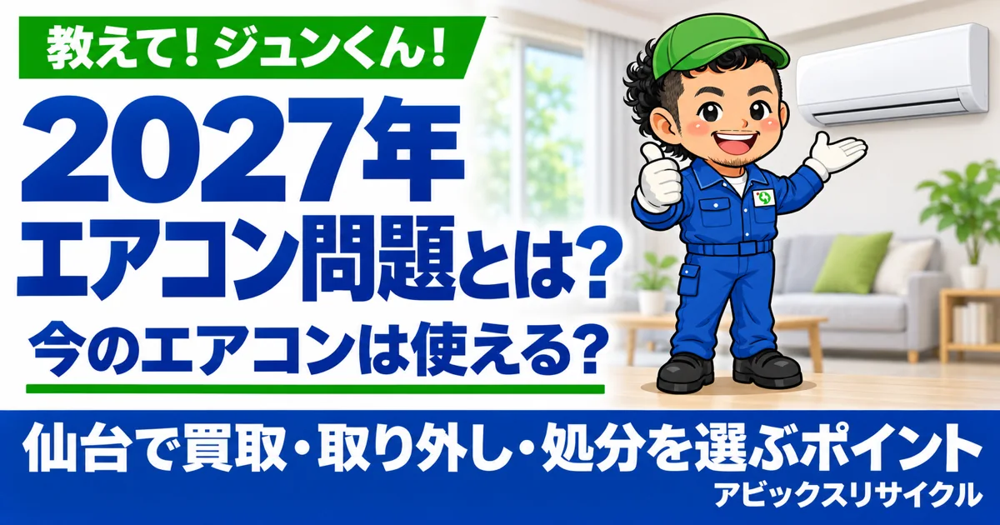
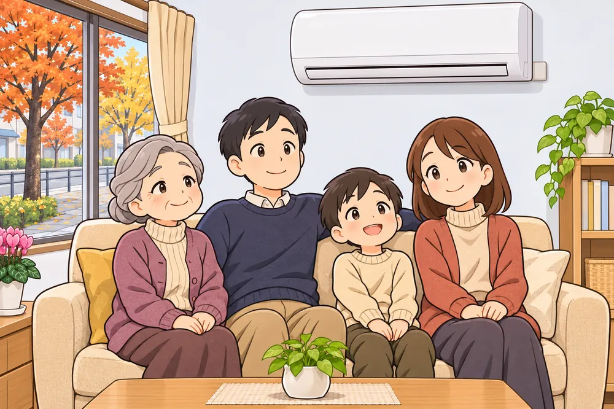
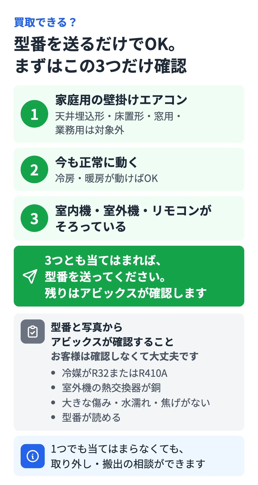
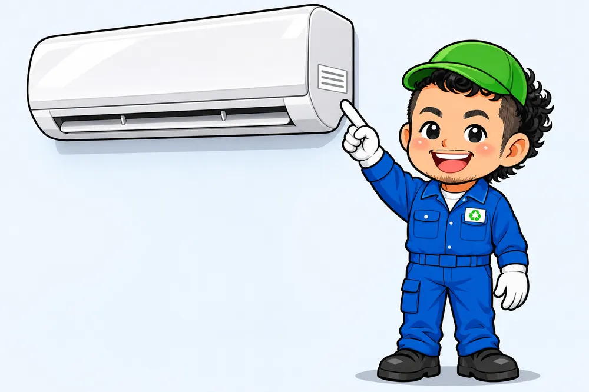
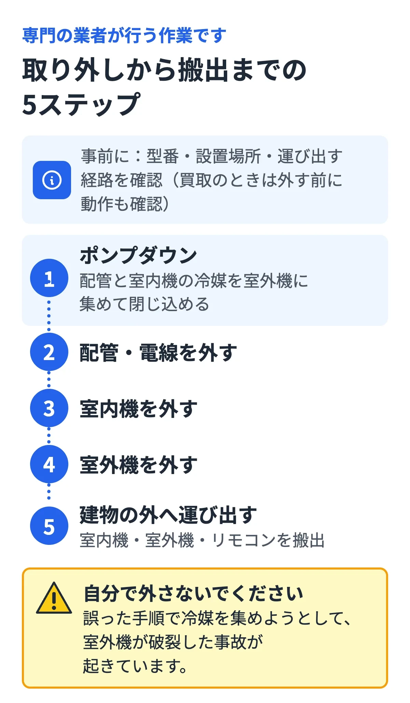
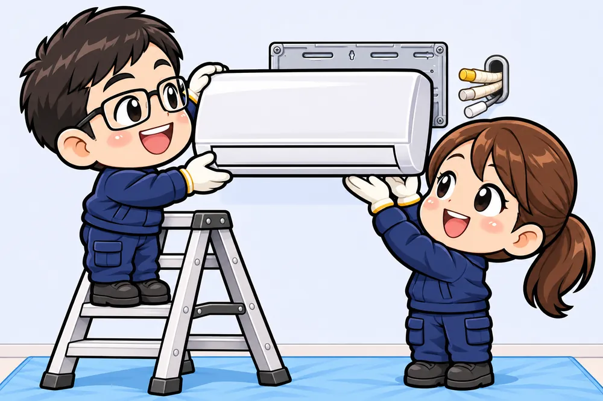
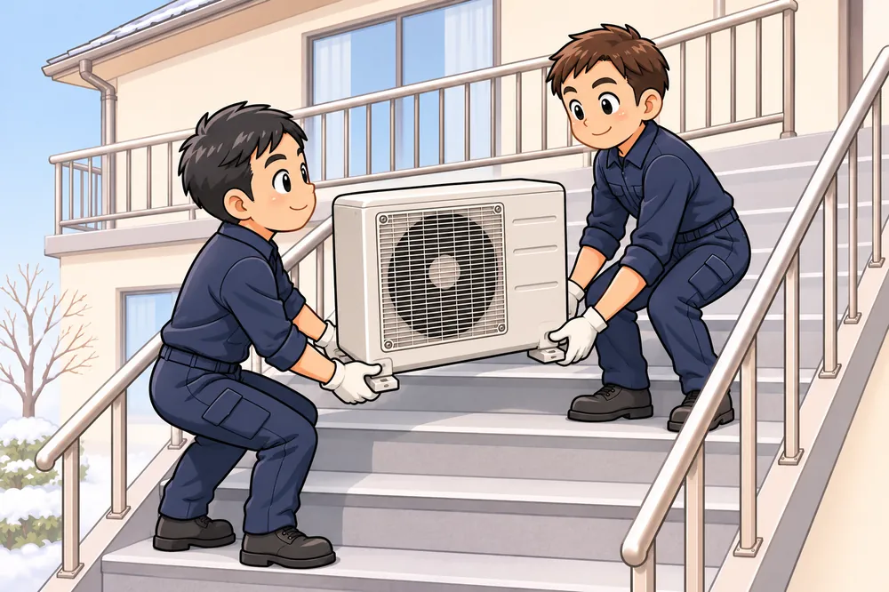
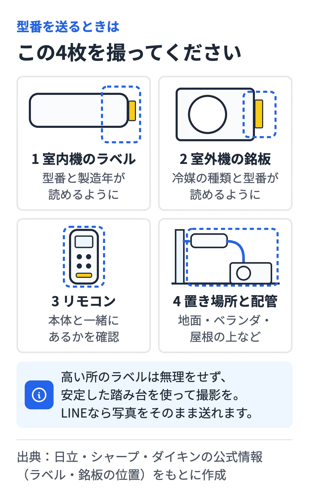
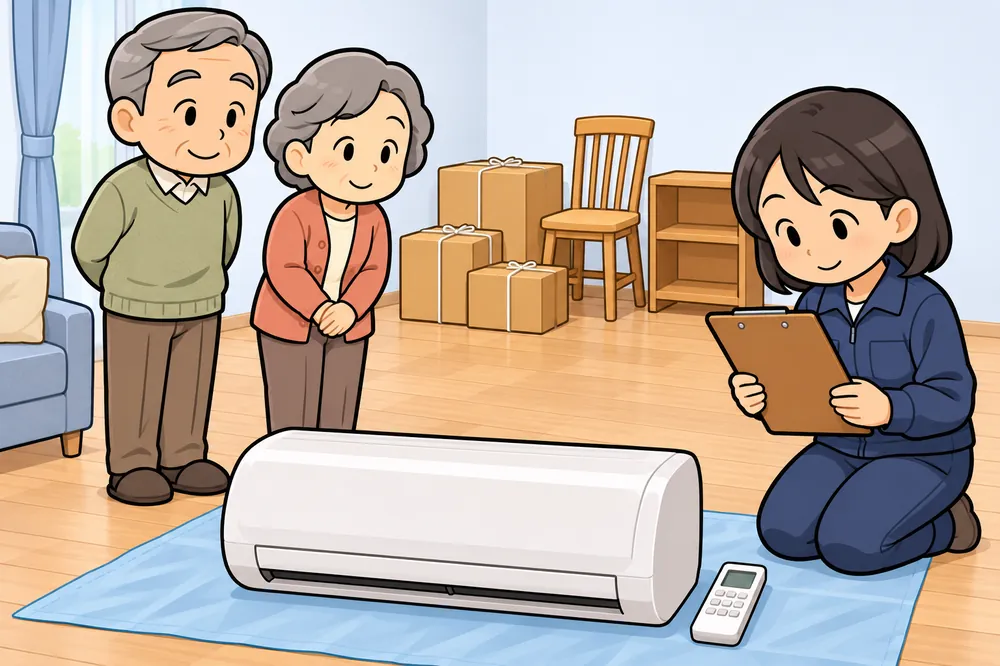

2027年エアコン問題とは？今のエアコンは使える？仙台で買取・取り外し・処分を選ぶポイント

更新日：2026年11月19日／書き手：アビックスリサイクル（有限会社アビックス リサイクル事業部・仙台市青葉区）
- 2027年度から、家庭用エアコンの省エネ基準が上がります
- 今のエアコンは、そのまま使えます（修理もできます）
- エアコンは仙台市の粗大ごみに出せません。処分は「買取」「取り外し・搬出の依頼」「家電リサイクル」の3通り
- 買取できるかは、3つ確認して型番を送るだけ
2027年エアコン問題とは何ですか？
👉 家庭用エアコンの省エネ基準が2027年度から上がることで、「安い機種が減る？」「値段が上がる？」と話題になっていることの呼び名です。
- 決まったのは2022年5月（経済産業省の告示の改正）
- 家庭用の壁掛け形は2027年度から。それ以外（天井埋込形など）は2029年度から
- 正式な制度名ではなく、SNSなどで広まった呼び名です
 図：2027年エアコン問題の流れ
図：2027年エアコン問題の流れ
トップランナー制度とは、どんな仕組みですか？
メーカーに「出荷する製品全体で、省エネの基準を満たすこと」を求める国の制度です。
- 出荷台数をふまえた平均で評価されます
- 基準に届かない機種が一律に禁止されるわけではありません
エアコンの値段は上がるのですか？
省エネ性能が上がる分、値上がりの可能性はあります（決まってはいません）。そのかわり、電気代は下がります。
 図：2027年度基準のエアコンで下がる光熱費の試算
図：2027年度基準のエアコンで下がる光熱費の試算
仙台・宮城に関係するポイントはありますか？
- 寒い地域向けの「寒冷地仕様」の区分が新しくできました
- 冬の暖房にもエアコンを使う家庭は、買い替えのときに暖房性能も比べましょう
今使っているエアコンはどうなりますか？
👉 2027年4月以降も、そのまま使えます。修理もできます。
 図：2027年4月から今のエアコンはどうなる？
図：2027年4月から今のエアコンはどうなる？

イラスト：2027年以降も今のエアコンは使い続けられます（イメージ）
買い替えの目安はありますか？
- 本体のラベルの「製造年」と「設計上の標準使用期間」が目安です（2009年4月以降に作られたエアコンに表示）
- メーカーの部品の保有期間（約10年）を過ぎると、修理できないことがあります
2027年4月を過ぎても、今のエアコンは使えます。慌てて買い替える前に、本体のラベルで製造年を確かめ、調子や電気代を見ながら判断しましょう。
買い替えを考えるとき、どんな選択肢がありますか？
選択肢は、大きく分けて3つです。
 図：買い替えを考えたときの3つの選択肢
図：買い替えを考えたときの3つの選択肢
① 今のエアコンを使い続ける
- 調子がよく、製造年が新しければ、急いで替える必要はありません
② 買い替えて、古いエアコンを購入店に引き取ってもらう
- 新しく買う店に、古いエアコンの引き取りを頼めます（家電リサイクル法）
- 手続きが一度で済みます
③ 古いエアコンだけ外して、売る・処分する
- 引越し・実家の片付け・空き家の整理などのとき
- まだ使えるなら、買取で費用の負担を軽くできる場合があります
古いエアコンの処分方法と費用は、どう考えればいいですか？
👉 エアコンは仙台市の粗大ごみに出せません。処分は次の3通りです。
 図：古いエアコンの3つの出口と費用の考え方（リサイクル料金はメーカーごとに異なります）
図：古いエアコンの3つの出口と費用の考え方（リサイクル料金はメーカーごとに異なります）
買取
- 向いている：家庭用の壁掛けで今も動き、室内機・室外機・リモコンがそろっている
- 費用：買取額を取り外し・搬出の費用に充てられる場合があります（型番・状態による）
- 注意：古物商許可のある業者に頼みましょう
取り外し・搬出の依頼
- 向いている：買取できない、ほかの不用品もまとめて片付けたい
- 費用：見積もりで確認（リサイクル料金が必要な場合はその分も）
家電リサイクルの手続き
- 販売店・仙台市の許可業者に頼む：リサイクル料金＋収集運搬料金
- 自分で指定引取場所（宮城野区に2か所）へ運ぶ：リサイクル料金＋振込手数料
- 注意：壁からの取り外しは、別に手配が必要な場合があります
⚠️ 理由や条件の説明がないまま「無料」とだけうたう回収には注意。何の費用が差し引かれるのか、作業の前に確認しましょう。
※天井埋込形などのエアコンは家電リサイクル法の対象外で、扱いが異なります。
買取できる？まずは3つを確認（細かい条件はアビックスが確認）
👉 お客様に確認していただくのは3つだけ。あとは型番と写真から、アビックスリサイクルが確認します。

図：買取できる？まずは3つだけ確認（アビックスリサイクルの買取条件・2026年11月時点）
※最終的に買取できるかは、型番・型式を確認したうえでお伝えします。
「うちのは古いから無理かも」と思っても、まずは室内機のラベルで型番を確かめてみてください。買取の条件に当てはまらなくても、取り外し・搬出のご相談はできます。
型番・製造年・冷媒はどこで確認できますか？
👉 型番と製造年は「室内機の側面か底面のラベル」、冷媒の種類は「室外機の銘板（シール）」で確認できます。

イラスト：ジュンくん「型番と製造年は、室内機の側面か底面のラベルを見てね」
 図：型番・製造年・冷媒の表示場所（メーカー公式情報をもとにした模式図）
図：型番・製造年・冷媒の表示場所（メーカー公式情報をもとにした模式図）
ラベルの位置は機種によって違います。見つからないときは、取扱説明書も確認してください。
 イラスト：ラベル・銘板・リモコンをスマホで撮って送るだけ（イメージ）
イラスト：ラベル・銘板・リモコンをスマホで撮って送るだけ（イメージ）
💡 ポイント：写真を送るときに撮っておくとよいもの
- 室内機の型式表示ラベル（型番と製造年が読めるように）
- 室外機の銘板（冷媒の種類と型番が読めるように）
- リモコン
- 室外機の置き場所と、配管が壁を通っている様子
室内機のラベルが高い位置にある場合は、無理をせず、安定した踏み台を使って撮影してください。
取り外し・搬出はどう進みますか？注意点は？
👉 取り外しは自分でせず、専門の業者に任せてください。冷媒を室外機に閉じ込める「ポンプダウン」が必要で、手順を誤って室外機が破裂した事故も起きています。
 イラスト：ジュンくん「冷媒の種類は室外機の銘板で。外すときはここのバルブでポンプダウンするよ」
イラスト：ジュンくん「冷媒の種類は室外機の銘板で。外すときはここのバルブでポンプダウンするよ」

図：取り外しから搬出までの5ステップ
 イラスト：室外機のバルブで行うポンプダウン（イメージ）
イラスト：室外機のバルブで行うポンプダウン（イメージ）

イラスト：室内機を壁の取付板から外す作業（イメージ）
搬出の前に確認しておくと安心なこと
- ✅ 室外機の置き場所（地面・ベランダ・屋根の上・壁の金具など）
- ✅ 配管の通り方と、外したあとの壁の穴をどうするか
- ✅ 2階以上・階段での運び出し（費用が変わる場合があります）
- ✅ 冬の雪や凍結（屋外の作業なので、天候も考えて日程を）

イラスト：室外機を外階段から運び出す作業（イメージ）
アビックスリサイクルに頼む場合の流れ
STEP1 型番を送る
- LINEで、室内機のラベルと室外機の銘板の写真を送るだけ
- 電話・お問い合わせフォームでもOK
STEP2 買取できるかと費用の目安をご案内
- 買取対象なら、買取額を取り外し・搬出の費用に充てられます（型番・状態による）
- 買取対象外でも、取り外し・搬出のご相談ができます
- リサイクル料金が必要な場合は、お見積もり時にご案内します
STEP3 日程を決めて作業
- 家具・家電・衣類など、ほかの不用品もまとめて回収できます

図：型番を送るときに撮る写真4枚
✅ 事前のお見積もり金額を超えて、当日に請求することはありません。作業内容が大きく変わる場合は、必ず事前にご説明します。お見積もり・ご相談は無料です。

イラスト：型番と状態の確認。ほかの不用品もまとめて相談できます（イメージ）
アビックスリサイクルについて
- 仙台市青葉区二日町に受付。仙台市・宮城県全域に対応
- 古物商許可（宮城県第221010002436号）
- 産業廃棄物収集運搬許可（宮城県第00400240596号）
- 遺品整理士認定協会「2026年度 遺品整理 優良事業所」（有効期限：2027年7月31日）
- 黒川郡大和町に回収センター（倉庫）。遺品整理士も在籍
よくある質問
Q. 2027年4月以降、今のエアコンは使えなくなりますか？
A. 使えます。買い替える必要はなく、2027年度基準によって修理ができなくなることもありません。
Q. R32やR410Aのエアコンは、2027年から禁止されるのですか？
A. 禁止ではありません。2027年度基準は省エネ性能（APF）の基準で、冷媒の種類を理由に今のエアコンが使えなくなる制度ではありません。R32・R410Aは、アビックスリサイクルの買取条件のひとつに当てはまります。
Q. 仙台市の粗大ごみでエアコンを出せますか？
A. 出せません。販売店や仙台市の許可業者に引き取りを頼むか、家電リサイクル券を使って指定引取場所へ自分で運びます。まだ使えるエアコンは、買取に出す方法もあります。
Q. エアコンを買取に出すとき、用意するものはありますか？
A. リモコンと、型番がわかる写真（室内機のラベル）を用意してください。古物営業法にもとづき、本人確認をお願いする場合があります。
Q. 買取できないエアコンでも、取り外しだけ頼めますか？
A. できます。費用はお見積もりでご案内します（リサイクル料金が必要な場合もお伝えします）。ほかの不用品もまとめて片付けられます。
📋 ジュンくんのまとめ
- ✅ 2027年エアコン問題は、省エネ基準の引き上げで安い機種が減り、価格が上がる可能性があるという話です
- ✅ 今のエアコンは2027年4月以降も使えます。修理ができなくなることもありません
- ✅ エアコンは仙台市の粗大ごみに出せません。買取・取り外し搬出の依頼・家電リサイクルの3通りから選びます
- ✅ 買取できるかは、まず3つを確認して型番を送るだけ。細かい条件はアビックスリサイクルが確認します
- ✅ 型番を送るだけで、買取できるかと費用の目安をお伝えします。買取対象外でも取り外し・搬出のご相談ができます